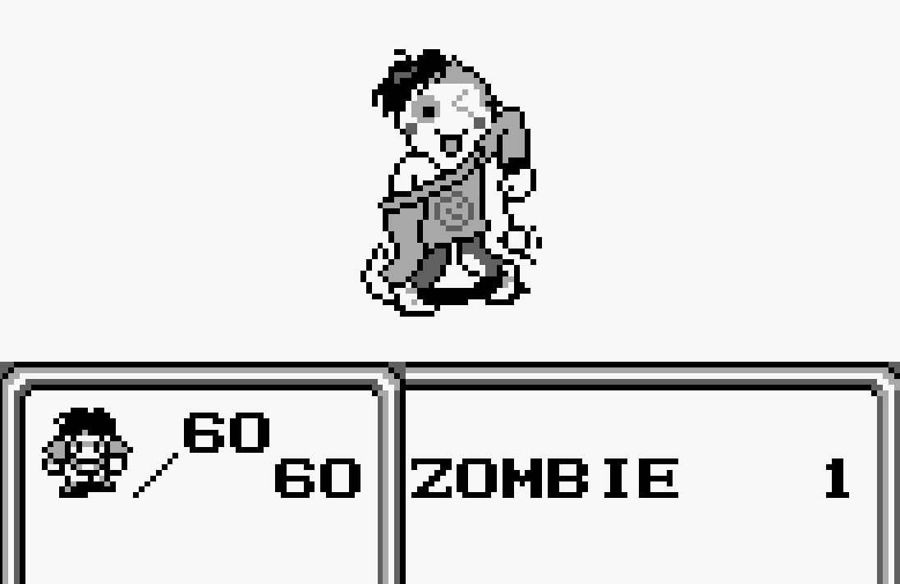
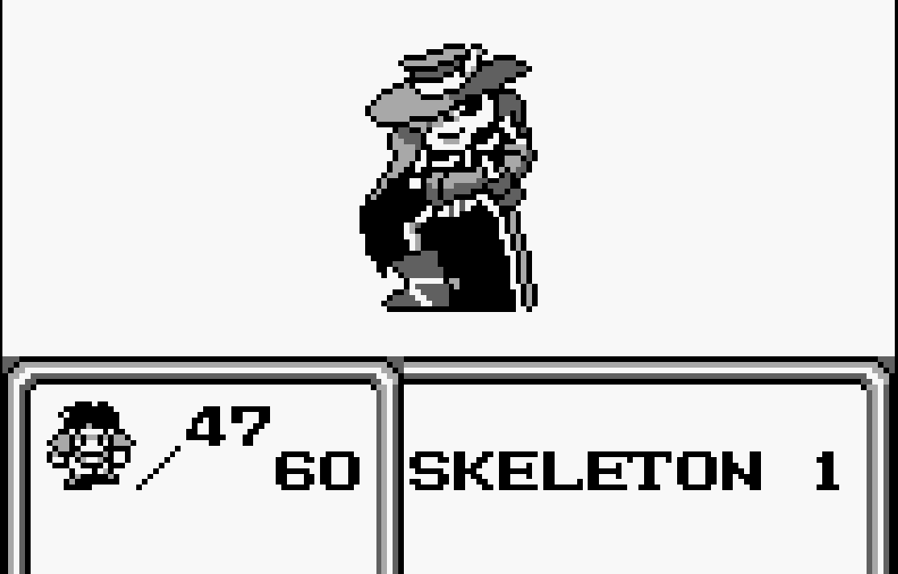
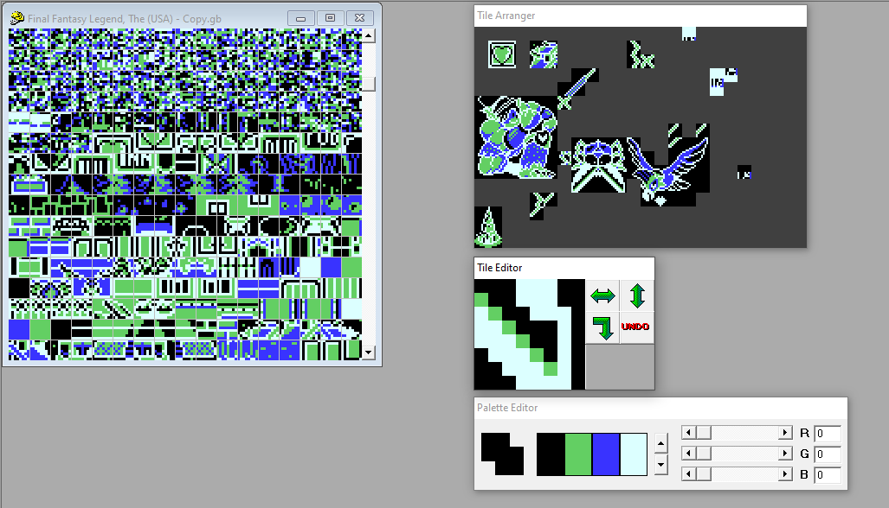

Black Christmas (1974) - Poster. Also released as "Silent Night Evil Night", seen here.
Black Christmas (1974) - Poster. Also released as "Silent Night Evil Night", seen here.
P5.JS | Assembly | Working with constraints | Game Jam
This work was created during a one week 'hackathon' jam, in which I had to conceptualise and create a project to a theme, and under creative and technical constraints of my choosing. I chose to create two projects, exploring different constraints.
The first was a p5.js webgame in the style of turn based RPG games, where players choose various kind or unkind options whilst interacting with enemies. My constraint was that all of the game's 'enemies' were sourced from Wikipedia articles, with the choices the player could make coming from there too.
I finished my first project about halfway through the hackathon, and dedicated the rest of my time to the second project, a rom hack of a Gameboy game which edited sprites and text to be 'kinder'. In order to do this, I worked with Hex editors, Tile editors and Assembly to edit the game's data.
Below you can check out the "Work Of Understanding" web game for yourself. If the embed breaks, it can also be seen HERE.
Not designed for mobile devices.
Below are images of the second project, created through modifying a ROM file.


